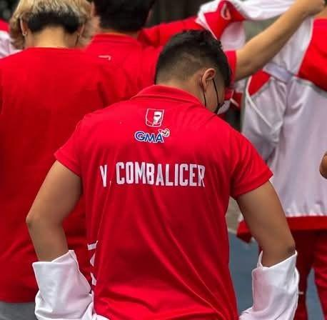

I view software execution blocks the exact same way I approach an active competitive match layout: scanning for operational bottlenecks, creating predictive fallback structures, and running fast calculations to secure the cleanest win.
Enrolled actively within the Diploma in Information Technology at the Polytechnic University of the Philippines San Juan, optimizing systems strategies.
Balancing extreme university tracks by handling part-time operational management workflows at my auntie's local restaurant enterprise. This sharpens my team synchronization and rapid workflow sorting skills.